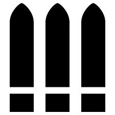

オーバーウォッチとは
「オーバーウォッチ」(略称:OW)は6人チームで戦う、FPSのチームアクション・シューターです。
個性豊かなヒーローの中から1人を選び、世界各地で相手チームを倒して目標を達成し、勝つことが目的です。
遊べるプラットフォームは PC, XBOX ONE , PS4 , Switch です。今ではクロスプレイも可能です。
また、オーバーウォッチ独自の世界観があり、ゲームだけでなく世界観やそれぞれのキャラのストーリーも楽しむこともできます。
2022年以降にオーバーウォッチ2発売予定があります。
オーバーウォッチ公式サイト
オーバーウォッチ2公式サイト
オーバーウォッチトレーラー
オーバーウォッチ2トレーラー
ヒーローについて
「ヒーロー」とは、簡単に言うと操作できるキャラ達です。タンク8人、ダメージ17人、サポート7人、計32人います。
月からやってきた、遺伝子操作で生まれたゴリラ。時空を超え、目にも留まらぬ速さで相手を翻弄するファイター。
戦場を駆け回りながらビートを刻むDJなど。「オーバーウォッチ」のヒーローは出身国も性格も、その背景も様々です。
どんなプレイスタイルでも、あなた好みのヒーローがきっと見つかります。
詳しくはこちら
ゲーム内の役割について
オーバーウォッチには「タンク」、「ダメージ」、「サポート」と呼ばれる3つの役割があります。(ゲーム内では「ロール」と
呼ぶこともあります)
タンク
タンク系ヒーローは多少のダメージをものともせず、敵が密集している地点や狭いエリアなど守りが強固な地点を
突破します。
所有スキルを大まかに分けると「盾」や「ダメージ吸収」です。他の役割と比べて、
体力値が高めに設定されています。
タンクはチームの先陣を切る存在なのです。
ダメージ

ダメージ系ヒーローは、それぞれのスキルやプレイスタイルを効果的に使い、敵の発見、攻撃、排除を行います。
所持スキルはどれも攻撃に特化しており、それぞれユニークなスキルを持っています。(空を飛んだり、
テレポートしたり、罠やタレットといった設置系スキルなど)
チームの主なダメージソースです。
しかし攻撃力が高いかわりにライフが低いため支援が必要です。
サポート
サポート系ヒーローは味方を支援する役割を担い、回復、シールドの付与、ダメージ強化など、
さまざまな支援能力をそなえ、チームに貢献します。
ヒーローによっては、味方に対するバフ、敵へのデバフ効果を付与するスキルや「蘇生」スキル、
「不死」スキル、「移動速度上昇」スキルといったユニークなスキルを持っています。
体力値はダメージと同じに設定されています。
詳しくはこちら
オーバーウォッチのマップ(ヌンバーニ)について
「オーバーウォッチ」では、ヒーローたちが世界中のさまざまなロケーションでバトルを繰り広げます。
発売日時点でのマップは全部で12種類でしたが、発売後に14種類が追加されて、合計26種類になりました。
(期間限定マップ・特殊マップを含めると34種類)
マップによって「コントロール」、「アサルト」、「エスコート」、「ＣＴＦ」、「ハイブリッド」、「エリミネーション」、
「デスマッチ」、「チーム・デスマッチ」という8つのゲームルールがあります。
今回紹介する「ヌンバーニ」は「ハイブリッド」のマップです。「ハイブリッド」というゲームルールは、
攻撃チームと防衛チーム分かれ、攻撃チームはまずペイロード(と呼ばれる車みたいなもの)を確保し、目的地点まで運びます。
防衛チームはこれを阻止します。目的地点はいくつかあり、ペイロードを確保、ペイロードが目的地点に到達すると
制限時間が伸びます。攻撃チームは制限時間内にペイロードを最終目的地点まで運ぶ、防衛チームは各目的地点での時間切れ
が勝利条件になります。
詳しくはこちら
ヌンバーニのプレイ動画
※本当は自作したかったのですが、時間が無かったので適当に拾ってきました
オーバーウォッチの歴史
未来の地球、人類はオムニカ・コーポレーションの開発した人工知能ロボット「オムニック」によって大きく発展していた。
自己改良しつつオムニックを自動製造するオムニウム施設が5つの大陸に建設され、人類に貢献していた。
しかし、オムニックの反乱により、人類は終わりの見えない戦争に突入する。「第1次オムニック・クライシス」と呼ばれる
この戦いを終結させるため、各国の精鋭が集い「オーバーウォッチ」を結成、25年に渡る戦争は終結した。
オムニック・クライシス終結後、オーバーウォッチは平和を維持する国際機関になる。人々はオーバーウォッチを称え、
そのメンバーはヒーローと呼ばれた。過激派集団ヌルセクターの反乱など人類とオムニックの対立の火種は燻り続けるが、
オーバーウォッチの活躍で平和な時代が続いた。
しかし、その後に各地で不可解な凶悪事件が勃発。その原因はオーバーウォッチだと言う声が上がり、2042年に「ペトラス法」
が成立、オーバーウォッチは解体されてしまう。スイスにあったオーバーウォッチ本部は爆破され、
リーダーのジャック・モリソンは死亡。残ったメンバーは犯罪者として扱われ、ある者は行方不明に、またある者は傭兵になった。
遺伝子改良されたゴリラにして天才科学者のウィンストンは、オーバーウォッチのメンバーを呼び戻すべきか否か葛藤していた
ペトラス法成立から数年後、テロ組織「タロン」の暗躍により治安はさらに悪化し、世界各国で紛争が増加した。
そして遂に第2次オムニック・クライシスが勃発する。人々は再びヒーローを必要とした。ウィンストンはかつてのエージェントに連絡し、オーバーウォッチを再結成しようとする。
ここまでがオーバーウォッチまでの話、これ以降はオーバーウォッチ2の話となる...。
オーバーウォッチの歴史